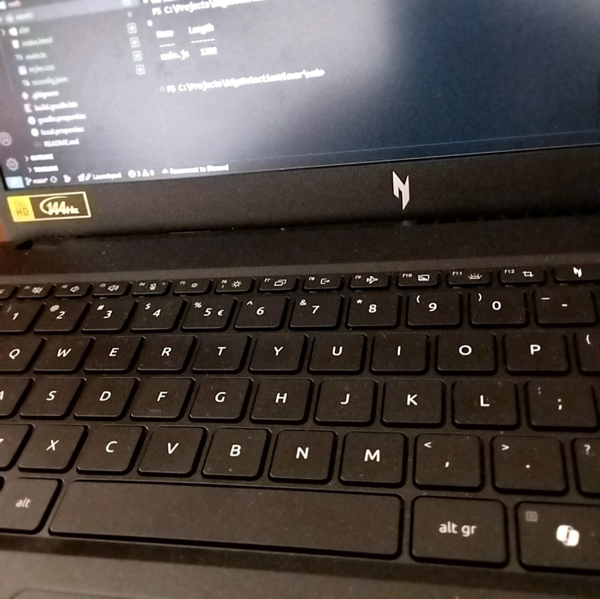

Edge Detection Viewer
Minimal demo — toggle between raw and edges

FPS:
0
| Res:
1920x1080
Mode: Raw
Auto mode
Use the button to switch display modes. Replace images in
assets/
with your exported frames.